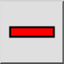
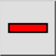
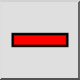
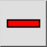

Remover Bloco
Barra de Ferramenta / Ícone:
 

Menu: Bloqueio > Remover Bloco
Atalho: B, R
Comandos: blockremove | br
Esta é uma tradução automática.
Barra de Ferramenta / Ícone:
 

Menu: Bloqueio > Remover Bloco
Atalho: B, R
Comandos: blockremove | br
Exclui o bloco ativo. O bloco e todas as suas inserções serão destruídas.